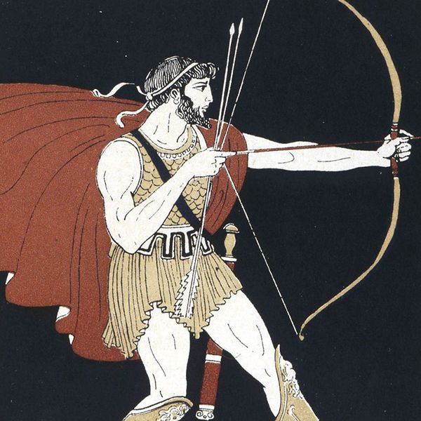

J. Alfred Prufrock
J. Alfred PrufrockYour Projects
Michelangelo
Why are all the women (who come and go) talking about him?
The Yellow Fog
And seeing that it was a soft October night, / Curled once about the house, and fell asleep.
Do I dare? Do I dare?
In a minute there is time / For decisions and revisions which a minute will reverse.
On Sunsets and Dooryards and Sprinkled Streets
It is impossible to say just what I mean!
The Big Questions
Shall I part my hair behind? Do I dare to eat a peach?
A Little Bit About the Mermaids
I do not think that they will sing to me.
Announcements
First Announcement
Here is one announcementSecond Announcement
and a second announcementThird Announcement
and... a third announcement!Trending
@annabelLee
Maiden by the Sea
@madgirl
Singing a Love Song
@ozymandias
King of Kings

@no-man
Stealing Your Sheep